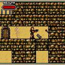
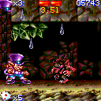

ExEn
Games for In-Fusio’s mobile platform, with the drawings and interviews that show how they were made.
Start with a game
 Mobiles Magazine, December 2002 · scan via Crash Bandicoot Zone
Mobiles Magazine, December 2002 · scan via Crash Bandicoot ZoneCrash Bandicoot
Kaolink’s 2002 interview, sketches and level plans.
Read the entry ↗
Tomb Raider: The Osiris Codex
IOMO’s original mobile game and BeTomorrow’s ExEn adaptation.
Read the entry ↗
Flynn's Adventures
The Nightmare Busters connection and its creators.
Read the entry ↗Platform history
In-Fusio, the handsets, the developer tools and the route to players.
Read about ExEn ↗Creators
Programmers, artists, designers, composers, producers and testers, with links to their games.
Browse people and studios ↗Catalog
Search by game, person, studio or role.
007 Ice Racer
James Bond’s Vanquish races through four missions inspired by Die Another Day.
Age of Empires II Mobile
Build and defend a medieval settlement in In-Fusio’s mobile strategy game.
Arthur & Les: Pirates
A pirate-themed action game for ExEn.
Banjo-Kazooie: Grunty's Revenge Missions
Banjo rescues Kazooie through a collection of short mini-games.
Bomb Jack
Collect every bomb while avoiding the enemies around Jack.
Bomb Squad
A Minesweeper-style puzzle game on a 14-by-10 board.
Charmed
The Halliwell sisters climb through three castles to rescue one another.
Crash Bandicoot
A 2D platformer developed by Kaolink for In-Fusio’s ExEn phones.
Crazy Cobra 2
Otaboo’s snake game adds unpredictable power-ups to thirty levels.
Eagle Squadron
A top-down shooter with a biplane, an F-16 and an unlockable helicopter.
Fighter Pilot Evolved
A fighter plane travels through time, from World War I to flying saucers.
Flynn's Adventures
Flynn fights through the dream world with jumps and thrown playing cards.
Football Fans
In-Fusio’s football game for ExEn.
Ghost Hunter
Shoot ghosts that split into smaller targets in a haunted manor.
I.F. Ski Jumping
Time the take-off, hold your balance in the air and land a long jump.
IF Extreme Ski
Link aerial tricks before bringing the skier down safely.
IF Ping Pong
A table-tennis championship with twelve characters and equipment upgrades.
IF Racing
An automatically accelerating Formula One-style racer.
IF Racing 2
In-Fusio’s second IF Racing title for ExEn.
IF Reversi
Reversi opponents range from prehistoric characters to Einstein.
IF Sudoku
In-Fusio’s Sudoku puzzle game for ExEn.
Jungle Run
Temu races a gorilla through jungle obstacle courses.
Malibu Ride 2
Race a powerboat against seven opponents across ten courses.
Midtown Madness 3 Mobile
Street racing and timed driving jobs through Paris.
Monkey Business
A Devalley puzzle game about matching coloured coins to collect bananas.
MotoGP
Licensed motorcycle racing, with quick races, time trials and a championship.
Mutant Alert
A scientist tries to escape a laboratory overrun by his own creations.
Panko
A block-pushing puzzle game starring a panda or a koala.
Pikubi
A bubble-gum bird fights an alien invasion in Devalley’s arcade platformer.
Pikubi 2: Rainbow Attack!
Pikubi returns with a new flying ability and another alien invasion.
Sexy Breaker Bikini
In-Fusio’s paddle-and-ball arcade game for ExEn.
SexyBreaker Manga
A brick-breaking game with 35 stages across seven locations.
Shado Fighter
One-on-one fighting with seven characters and story, survival and time-attack modes.
South Park
Thirteen mini-games built around the television series and its characters.
Sphere Madness
Asobo’s ball-rolling puzzle game, with 40 maze-like stages.
Sphere Madness 2
A rolling-ball sequel that adds a fragile, floating bubble form.
Spyro
Spyro delivers fairy dresses for the Fairy Queen’s Royal Ball.
Star Wars: Revenge of the Sith
A side-scrolling action game based on Episode III.
The Terminator
A shooting-gallery game controlled through the phone’s number keys.
Tomb Raider: Elixir of Life
The final episode of Lara Croft’s original mobile trilogy.
Tomb Raider: Quest for Cinnabar
The second episode of Lara Croft’s mobile trilogy.
Tomb Raider: The Osiris Codex
Lara Croft searches an Egyptian tomb in the first episode of her mobile trilogy.
Tour De France
A side-view cycling game based on the 2005 Tour.
Worms
Turn-based artillery battles with bazookas, grenades and dynamite.
X-Mas: Tales
A Christmas-themed action game for ExEn.
Zoo Tycoon 2 Mobile
Build and manage a zoo in In-Fusio’s mobile adaptation.
No matching games. Try another name or clear the filters.
Catalog scope and data downloads
This collection began with 46 My Abandonware ExEn listings. Years normally follow those entries. Crash uses its documented 2002 French release; its later US listing is retained in the entry’s catalog details.
Methods and credits ↗